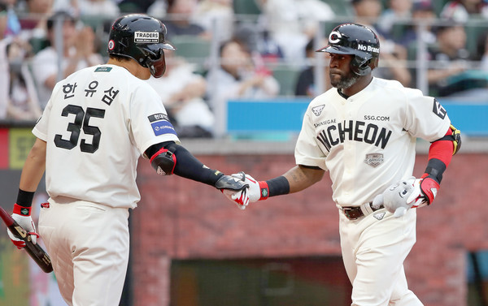
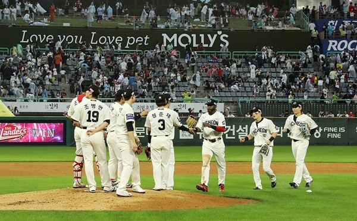
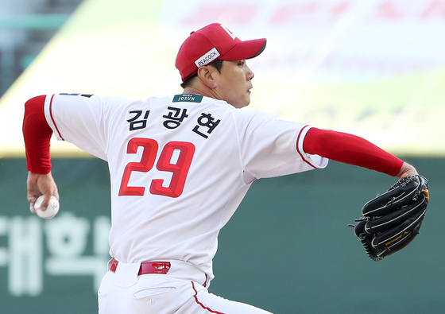

LANDERS NEWS
-

SSG 랜더스, 에레디아 82일 만의 결승 홈런포… 반등 신호탄 되나
프로야구 SSG 랜더스가 외국인 타자 기예르모 에레디아의 결승 홈런 한 방으로 소중한 1승을 챙겼다. 침묵하던 방망이는 여전히 무겁지만 값진 승리로 연패의 흐름을 끊으며 반등의 발판을 마련했다. SSG는 15일 인천 SSG랜더스필드에서 열린 2025 신한 SOL뱅크 KBO리그 롯데 자이언츠와의 홈경기에서 1-0으로 승리했다. 팽팽한 투수전이 이어진 가운데 6회 터진 에레디아의 솔로포가 승부를 갈랐다. 이날 승리로 SSG는 3연패에서 벗어나 시즌 34승 2무 32패를 기록하며 6위를 지켰다. 경기 흐름을 바꾼 건 6회말 선두 타자로 나선 에레디아의 방망이였다. 그는 롯데 선발 이민석
2025.06.16
-

SSG랜더스, '리그 10위' 키움과 고척 원정 3연전... 순위 상승 기회
SSG랜더스가 순위 상승을 노려볼 만한 기회를 맞이했다. 상대는 리그 최하위 키움히어로즈다. SSG랜더스는 오는 17일부터 19일까지 고척돔에서 키움을 상대로 원정 3연전을 펼친다. SSG는 이번 시리즈에서 위닝시리즈 이상을 거둬야 상위권 도약 실마리를 이어갈 수 있다. 현재 SSG는 34승 2무 32패(승률 0.515)로 리그 6위에 머물러 있다. 5위 삼성라이온즈와 1경기 차, 7위 KIA타이거즈와도 0.5경기 차에 불과해 순위가 언제든지 바뀔 수 있는 불안한 위치다.
2025.06.16
-

2027년까지 보장받은 김광현... 양현종과의 ‘200승 전쟁’ 달아오른다
“야구를 시작했을 때의 목표가 200승이었다. 2년 안으로 200승을 달성하겠다.” 지난 13일 프로야구 SSG 랜더스와 2년 다년계약을 발표한 김광현(37)은 이렇게 말했다. 역대 KBO리그에서 단 한 명만이 밟았던 200승 고지를 향한 열망을 드러내면서다. 30대 후반까지 선수 생활을 보장받은 김광현 그리고 1988년생 동갑내기 라이벌인 KIA 타이거즈 양현종(37)의 200승 전쟁이 화끈하게 달아오르고 있다.김광현과 양현종은 프로야구를 대표하는 왼손 에이스들이다.
2025.06.15
-

올해 우승후보 ‘1위 KIA타이거즈··· SSG는 ‘공동 7위
프로야구 SSG 랜더스가 시즌 10번째 홈 만원 관중을 달성했습니다. SSG 구단의 단일 시즌 최다 매진 신기록입니다. 오늘(14일) 인천 SSG랜더스필드에서 열리는 롯데 자이언츠와 SSG의 경기 입장권 2만 3000장이 모두 팔렸습니다. SSG는 "올 시즌 10번째 매진에 성공했다. 기존 구단 최다 기록(9회, 2010·2024시즌)을 넘어서는 성과"라고 전했습니다. 올 시즌 SSG는 3월 22일, 23일 두산 베어스전, 4월 20일 LG 트윈스전, 5월 10일 KIA 타이거즈전, 11일 KIA와의 더블헤더 1, 2차전, 24일, 25일 LG전, 6월 3일 삼성 라이온즈전에 이어 이날 10번째 만원 관중을 동원했습니다. 홈 35경기 만에 이룬 성과입니다. 특히 추신수 구단주 보좌역의 은퇴식이 열리는 날, 구단 신기록을 달성해 기쁨은 배가됐습니다.
2025.06.14
-

SSG 불펜, 개막 4경기 평균자책점 0.55 '철벽방어'...노경은·이로운·한두솔·김민 '필승조 총출동'
한국프로야구 2025 KBO리그가 개막한 가운데 SSG 랜더스 불펜진이 강력한 힘을 발휘하며 팀의 상승세를 이끌고 있다. 개막 4경기 동안 SSG는 3승 1패로 기분 좋게 시즌을 출발했으며, 투수진 전체 평균자책점 2.37로 LG 트윈스(1.00)에 이어 리그 2위를 기록 중이다. 특히 주목할 만한 점은 SSG 불펜진의 압도적인 성적이다. 26일 현재 SSG 불펜의 평균자책점은 0.55(16⅓이닝 15피안타 2실점 1자책)로 리그 1위를 달리고 있으며, 2위 kt wiz(2.45)와도 큰 격차를 보이고 있다.
2025.06.09